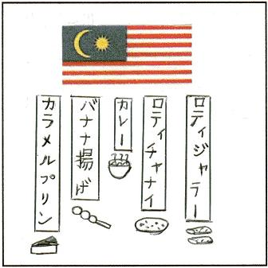

模擬店
留学生(マレーシア)
マレーシア料理

マレーシア料理を紹介したいと思います。その料理のおいしさをみんなに食べてもらいたいです。マレーシアのカレーと日本のカレーの違いを知らせたいと思います。バナナ揚げはマレーシアの1つのお菓子であって、甘くてもちもちです。ロティジャラーとロティチャナイは、よくカレーといっしょに食べています。ぜひ食べてみてください。
top
>
模擬店
> 留学生(マレーシア)
 マレーシア料理
マレーシア料理 マレーシア料理を紹介したいと思います。その料理のおいしさをみんなに食べてもらいたいです。マレーシアのカレーと日本のカレーの違いを知らせたいと思います。バナナ揚げはマレーシアの1つのお菓子であって、甘くてもちもちです。ロティジャラーとロティチャナイは、よくカレーといっしょに食べています。ぜひ食べてみてください。
マレーシア料理を紹介したいと思います。その料理のおいしさをみんなに食べてもらいたいです。マレーシアのカレーと日本のカレーの違いを知らせたいと思います。バナナ揚げはマレーシアの1つのお菓子であって、甘くてもちもちです。ロティジャラーとロティチャナイは、よくカレーといっしょに食べています。ぜひ食べてみてください。